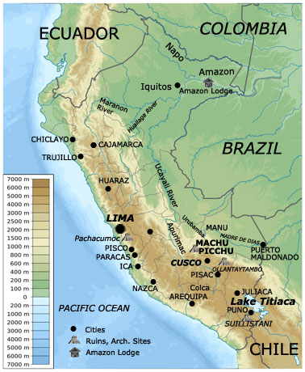
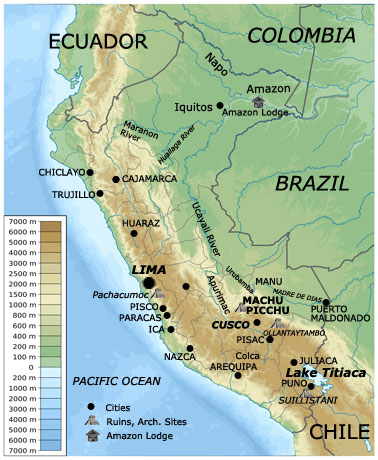
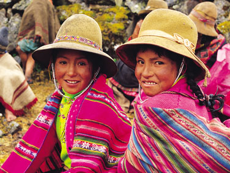
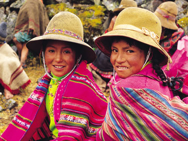

First-Class and Luxury AccomModations
VISIT CUSCO'S SPECTACULAR FESTIVAL OF THE SUN
Known as the Inti Raymi, or Sun Festival, this ancient festival was a gathering at the time of the winter solstice to honor the Sun God, with ceremonies and sacrifices to insure a fruitful year to come for crops and prosperity for the years to come. The sun festival was also an homage to "Inca", celebrated as the first son of the Sun God.
Since it appeared to the ancient Incas that the sun and the Sun God were about to disappear, as the winter solstice is the time when the sun is farthest from earth, the Incas would gather to honor the sun, and implore the Sun to return, for warmer and longer days. Participants would often fast for days before the solstice, and the cermony was crowned with a lavish feast or banquet serving corn bread, meats, tea made from coca leaves, and also chicha. Gifts were also presented to the Inca to garner favors.
As the Spanish conquistadors gained power in Peru and the new world, they banned the sun festival in the sixteenth century, as they considered it to be a pagan ritual, and the ceremony and it's adherents practiced it underground.
Today, in modern times, thousands and thousands of people gather each year in Cusco for a week-long festival in June to honor the return of the sun and the renewal of the solar year. The festival is known as Inti Raymi and brings pilgrims and travelers from all over Peru, South America and the world.
 


 
